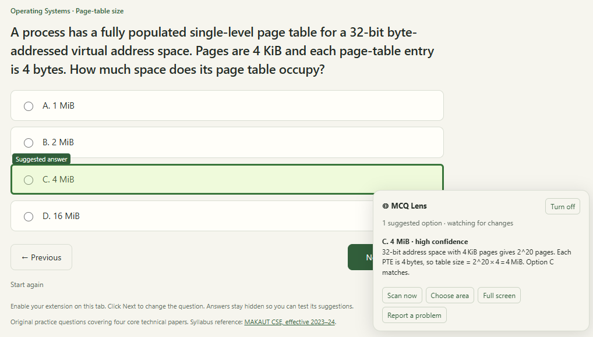

FREE BROWSER EXTENSION
The answer, highlighted on the page.
MCQ Lens reads the multiple-choice question on your screen and outlines the suggested option, with the reasoning beside it. Move to the next question and it answers again.
Also for Edge, Brave, Opera and Firefox.
- No account
- No API key
- 50 free questions a day
- For desktop browsers

Three steps.
- 1
Install it
Download the zip and load it in your browser. The install guide walks you through it in under a minute.
- 2
Turn it on for a tab
Open a page with a question, click the MCQ Lens icon and choose Enable on this tab.
- 3
Read the suggestion
The suggested option gets a green outline. A panel shows the reasoning so you can check it yourself.
It never clicks for you
MCQ Lens only highlights. It doesn’t select or submit anything on the page.
Only the tab you choose
It reads a page only after you enable it there, and stops when you reload, navigate away or switch it off.
Need more than 50 a day?
Add your own free Groq, Gemini or Z.ai key in Settings. Your questions then run on your key with no daily cap.
Private by design
No account needed. A question goes only to the MCQ Lens service and its AI providers, to get the answer. Read the privacy policy.
PRACTICE TEST
Try it before your next quiz.
Get 25 random questions from a bank of over 200: maths, physics, chemistry, biology, computer science, English, aptitude and general knowledge. At the end you see the answer key, so you can check how the extension did.